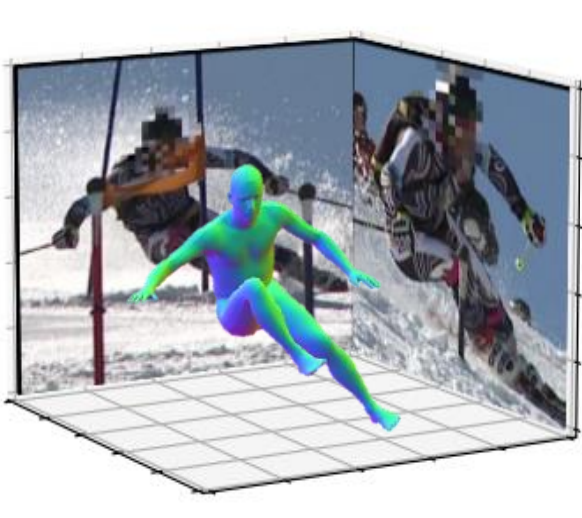
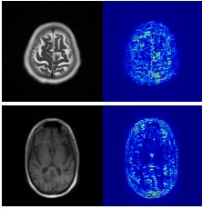
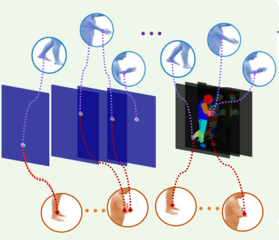
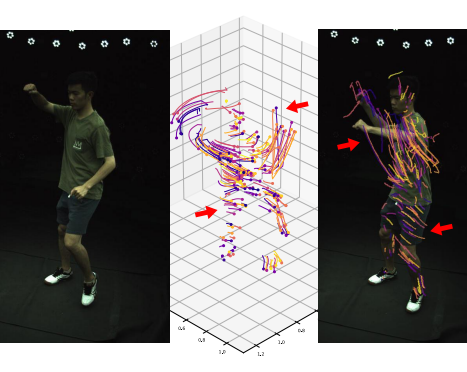
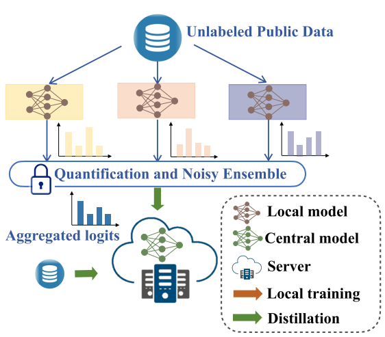
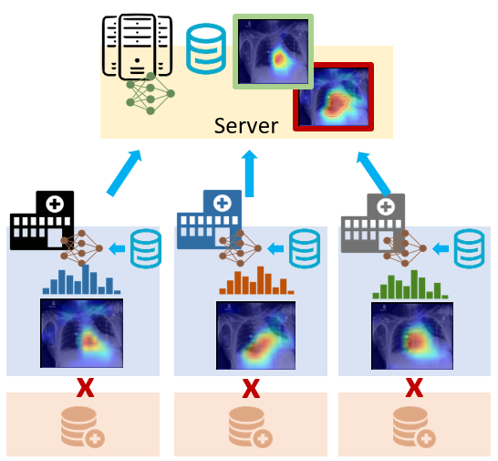

|
Ph.D. student Google scholar / LinkedIn / CV |
 |
| I am a final-year Ph.D. student advised by Prof. David Doermann.
I got bachelor and master degree from Beihang University. |
|
|
| |
|  |
We propose a novel simulation-based training pipeline for multi-view human mesh recovery, which (a) relies on intermediate 2D representations which are more robust to synthetic-to-real domain gap; (b) leverages learnable calibration and triangulation to adapt to more diversified camera setups; and (c) progressively aggregates multi-view information in a canonical 3D space to remove ambiguities in 2D representations. |
|  |
We propose a privacy-preserving FL framework leveraging unlabeled public data for one-way offline knowledge distillation in this work. The central model is learned from local knowledge via ensemble attention distillation. Our technique uses decentralized and heterogeneous local data like existing FL approaches, but more importantly, it significantly reduces the risk of privacy leakage. We demonstrate that our method achieves very competitive performance with more robust privacy preservation based on extensive experiments on image classification, segmentation, and reconstruction tasks. |
|  |
We propose cross-representation alignment utilizing the complementary information from the robust but sparse representation (2D keypoints). Specifically, the alignment errors between initial mesh estimation and both 2D representations are forwarded into regressor and dynamically corrected in the following mesh regression. This adaptive cross-representation alignment explicitly learns from the deviations and captures complementary information: robustness from sparse representation and richness from dense representation. |
|  |
We leverage a neural motion field for estimating the motion of all points in a multiview setting. Modeling the motion from a dynamic scene with multiview data is challenging due to the ambiguities in points of similar color and points with time-varying color. We propose to regularize the estimated motion to be predictable. If the motion from previous frames is known, then the motion in the near future should be predictable. Therefore, we introduce a predictability regularization by first conditioning the estimated motion on latent embeddings, then by adopting a predictor network to enforce predictability on the embeddings. |
|  |
We propose a quantized and noisy ensemble of local predictions from completely trained local models for stronger privacy guarantees without sacrificing accuracy. Based on extensive experiments on classification and segmentation tasks, we show that our method outperforms baseline FL algorithms with superior performance in both accuracy and data privacy preservation. |
|  |
We propose a new distillation-based FL framework that can preserve privacy by design, while also consuming substantially less network communication resources when compared to the current methods. Our framework engages in inter-node communication using only publicly available and approved datasets, thereby giving explicit privacy control to the user. To distill knowledge among the various local models, our framework involves a novel ensemble distillation algorithm that uses both final prediction as well as model attention. |